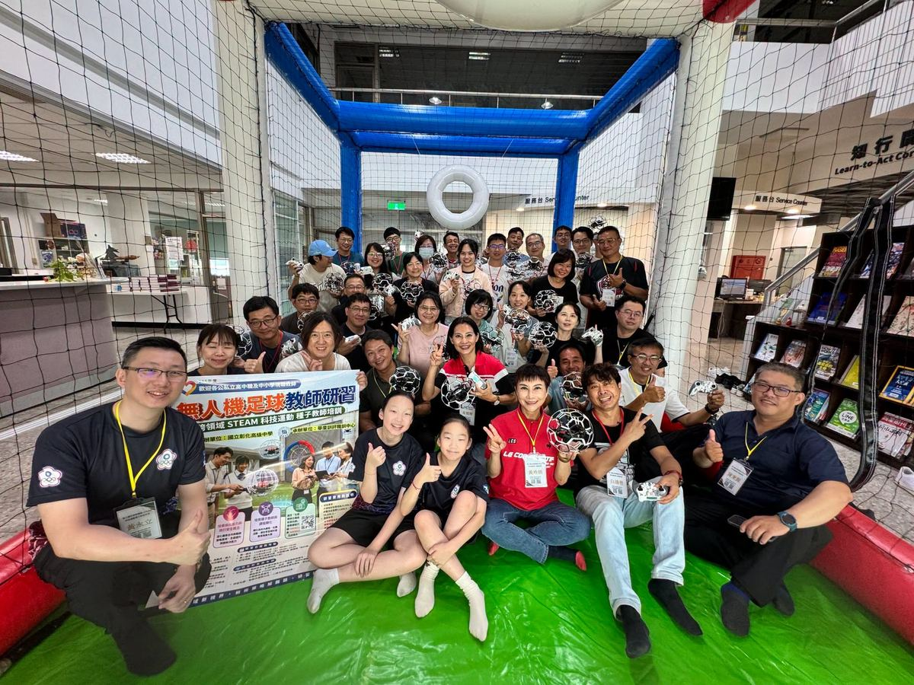
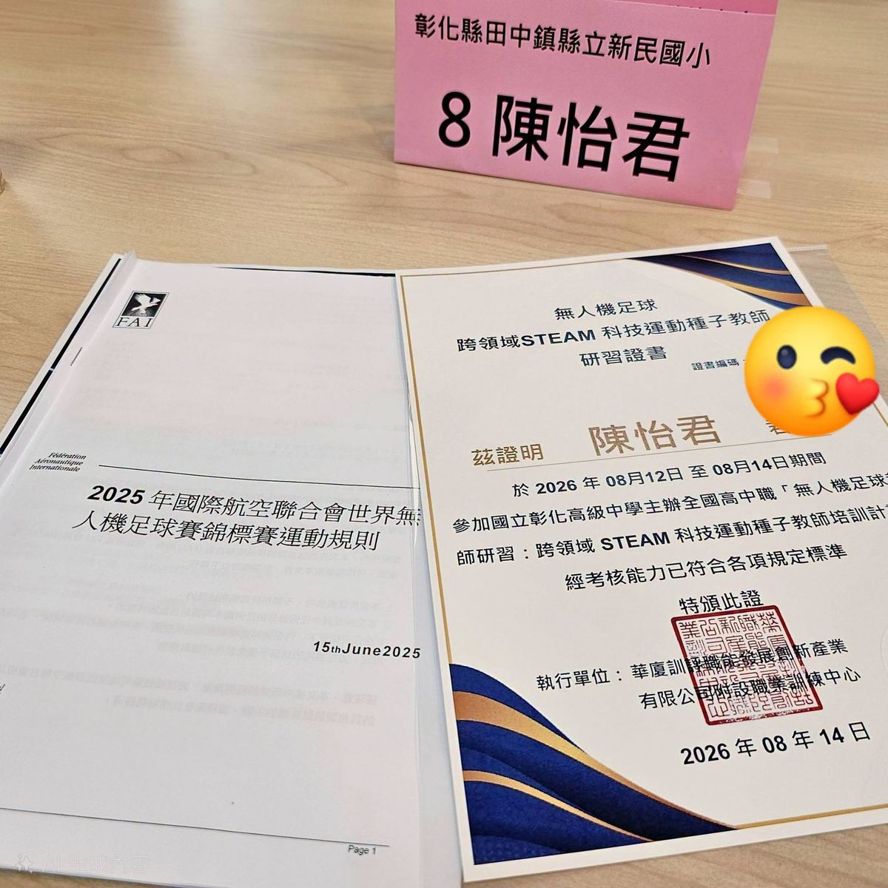
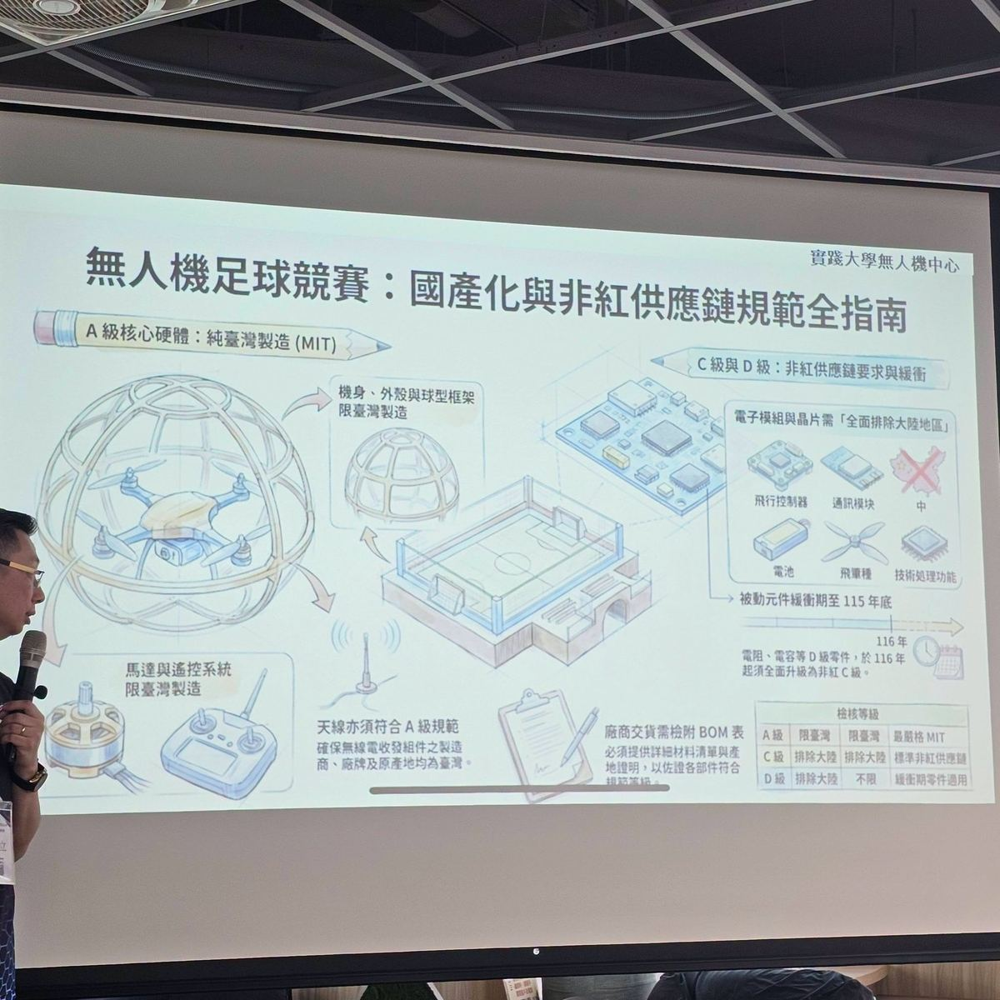

The Legislative Yuan recently passed a budget related to drones, showing the nation's strong support for the tech industry and talent cultivation! On the front lines of education, teachers had already rolled up their sleeves and gotten ready. The National Changhua Senior High School Library held two innovative sessions of "Drone Football Teacher Training: Cross-Disciplinary STEAM Technology Sports Seed Teacher Training," drawing outstanding teachers from across Taiwan — and Hsinmin's IT Section Chief, Chen Yi-Chun, flew in with full enthusiasm!



A full day of training! From "flying the wrong direction" to a "3-on-3 match battle." With hands-on practice for every teacher and professional coaches guiding in small groups, the training covered solid fundamentals (drone structure, flight principles, safety rules, and international competition regulations), control drills (hovering, flying through goals, and advanced missions), and finally a real 3-on-3 match — teachers went from clumsy in the morning to smoothly communicating, positioning, and using strategy together by the afternoon! National drone football team athletes even joined to demonstrate live.
This wasn't just a hands-on experience — it was the start of real classroom transformation. Section Chief Chen discussed with teachers from many schools how to bring this system back to their own campuses: full-spectrum skills from assembly and hardware repair to programming and teamwork, cross-disciplinary STEAM integration linking IT, engineering, math, and PE, and cultivating the kind of core skills that come from problem-solving under pressure.
Certified after rigorous flight-skills assessment
When one teacher learns, they can bring an amazing class to their students; when seed teachers bring skill and passion back to campus, they can light up countless children's tech dreams! We look forward to Section Chief Chen bringing this energy back to Hsinmin, helping STEAM education take flight across the whole school. 🚀
無人機預算熱騰騰通過！校園STEAM科技教育狂飆起飛！
立法院日前三讀通過無人機相關預算，顯見國家對科技產業與人才培育的全力支持！而在教學第一線，老師們早已捲起袖子準備好了——彰化高中圖書館特別辦理兩梯次「無人機足球教師研習：跨領域STEAM科技運動種子教師培訓」，吸引來自全國各地的優秀教師齊聚，新民國小資訊組長陳怡君老師也親自到場熱血開飛，展現第一線教師對新興科技教學的滿滿熱情。
一整天的修鍊！從「飛錯方向」到「3對3賽場對決」。本次研習主打「人手一機」扎實實作，由專業教練採小組責任制手把手指導，帶領老師們展開驚喜連連的學習之旅：紮實打底，掌握無人機結構、飛行原理、安全規範與FAI國際競賽規則；操控特訓，練習定點飛行、穿越球門到進階任務，精準克服飛行盲點；三對三實戰，踏入大型競賽場！老師們從早上的生疏，到下午能流暢溝通、補位、戰術協調，享受高節奏的空中足球對抗！現場更特別邀請到無人機足球國家代表隊選手親自示範，讓老師們近距離感受這項科技運動的國際級魅力！
從「我會飛」到「我能教」：翻轉課堂的跨域魔法。這不只是一場操控體驗，更是教育轉化的起點！研習中新民國小陳怡君組長與各校師長們熱烈討論，思考如何將這套機制帶回自己的學校：全方位技能串聯，從機體手作組裝、硬體維修、程式設計，到競賽策略與團隊溝通；跨學科STEAM整合，完美串聯資訊科技、生活科技、工程設計、數學與體育學科；培育核心素養，讓孩子在反覆測試與競賽中，學會發現問題、即時應變與團隊合作！
學習成果豐碩！順利通過種子師資認證。在嚴格的操控能力評量中，怡君老師順利取得「無人機足球種子教師證書」！特別感謝主辦單位國立彰化高中圖書館大方開放設備與資源，以及承辦單位華廈訓評職訓中心的專業培訓。
一位老師學會，能帶給孩子一堂精采的課；當種子教師們把技術與熱情帶回校園，將能點亮無數孩子的科技夢！期待怡君組長帶回滿滿能量，讓STEAM教育在各大校園裡蓬勃發展！
Tap 🔊 to listen · 點喇叭聽發音
Drone football is an innovative way to teach STEAM.無人機足球是教STEAM的一種創新方式。
Every teacher got hands-on practice flying a drone.每位老師都親自動手操作無人機練習。
A good strategy helps your team win the match.好的策略能幫助團隊贏得比賽。
Winning a 3-on-3 match takes great teamwork.贏得三對三比賽需要很棒的團隊合作。
Teacher Chen is now a certified drone football seed teacher.陳老師現在是獲得認證的無人機足球種子教師。
Teacher Chen showed real passion for new technology.陳老師展現了對新科技的滿滿熱情。
Match the word to its meaning
把英文和中文配對
Matched 配對成功：0 / 6